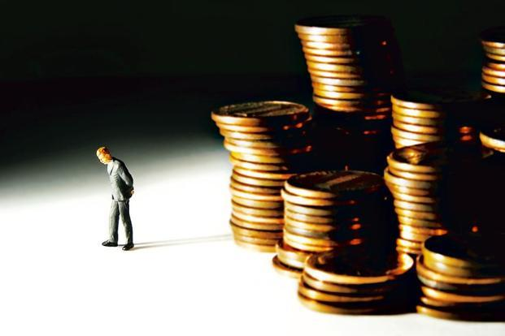

<div class="modal-dialog">
	<div class="modal-content">
		<div class="modal-header">
			<button type="button" class="close" data-dismiss="modal"
				aria-hidden="true">&times;</button>
			<h4 class="modal-title" id="appointmentModalLabel">Money can buy
				you smiles…</h4>
		</div>
		<div class="modal-body">
			<div class="row">
				<div class="col-lg-6 col-md-6 col-sm-6  blog-image">
					<br />
					<h5>Pay now, consume later. It’ll add to your anticipation and
						intensity of happiness</h5>
				</div>
				<div class="col-lg-6 col-md-6 col-sm-6 ">
					<h5>
						Published in <a
							href="http://www.livemint.com/Leisure/xr6KEjuV8p3fX4gRcZZNXM/Money-can-buy-you-smiles.html"
							target="_blank">Mint-Leading Business Newspaper</a> <br><i>Mon, Mar 11 2013. 08 15 PM
						</i>
					</h5>

					<p>Spend your money in a way that enhances your emotional
						health</p>
					<ul class="shareIcons">
						<li><a href="https://twitter.com/DrSujWell" target="_blank"><i
								class="fa fa-twitter"></i></a></li>
						<li><a href="https://www.facebook.com/wellnessbydrsujata"
							target="_blank"><i class="fa fa-facebook"></i></a></li>
						<li><a
							href="https://www.linkedin.com/profile/view?id=12822870&authType=NAME_SEARCH&authToken=yqYt&locale=en_US&trk=tyah&trkInfo=clickedVertical%3Amynetwork%2Cidx%3A1-1-1%2CtarId%3A1436516597183%2Ctas%3Asujata%20kelk"
							target="_blank"><i class="fa fa-linkedin"></i></a></li>
					</ul>
				</div>

			</div>
			<div class="row">
				<div class="col-lg-12  blog-content">
					<p>There is a popular belief that the things that bring us
						happiness aren’t for sale. Songs have been sung about this, poetry
						written, and while it’s a lovely sentiment, it is wrong. Money
						allows us to buffer ourselves against daily worries and gives us
						more leisure time. It also allows us to control the nature of our
						daily activities and for us to have more meaningful work.
						Scientists have found that each of these is a necessary ingredient
						in the recipe for a happy life.</p>
					<p>Yet researchers have also found that wealthy people aren’t
						that much happier than the not-so-wealthy. Harvard psychologist
						Daniel Gilbert and his colleagues Elizabeth Dunn and Timothy
						Wilson write in a paper titled “If Money Doesn’t Make You Happy,
						Then You Probably Aren’t Spending It Right”, published in the
						Journal of Consumer Psychology in March 2011, that the reason the
						correlation between happiness and money is modest at best is
						because people don’t know the basic scientific facts about
						happiness. Prof. Gilbert and colleagues have compiled principles
						on happiness that will help you spend your money in a way that
						enhances your emotional health. The paper compiled eight
						principles that are based on more than 80 studies in consumer
						psychology by Prof. Gilbert, Dunn, Wilson and many other
						researchers. Of those eight principles, five are presented here.</p>
					<p>
						<strong>u Happiness often comes from spending money on
							experiences</strong>
					</p>
					<p>
						Research shows that people are often happier when they spend money
						on experiences like vacations and concerts rather than things like
						clothes. Bangalore-based Talha Salaria, 35, corporate lawyer and
						founder of Lawyers At Work (LAW), agrees. “A couple of years ago I
						was wondering whether to gift my mother jewellery for her birthday
						(which my mother loves) or take her for a holiday to Singapore.
						Finally, just the two of us went for a holiday and had a fabulous
						time. Looking back, I sometimes wonder why I even thought about
						what now seems like an obvious choice.”<br> Some experiences
						are obviously better than others. Goa-based psychologist Arpita
						Anand says, “There are memories associated with experiences that
						continue to bring happiness long after the actual experience is
						over.” People are happier travelling to holiday destinations than
						travelling in a car to get to work. The key seems to be
						engagement—if you are engaged in what you do, you will be a
						happier person.
					</p>
					<p>
						u Delay your pleasurable consumption, don’t yield to the
						temptation of instant gratification<br> Consuming now and
						paying later can make us susceptible to impulse shopping and
						eliminate anticipation, a powerful source of happiness. People get
						a lot of enjoyment from anticipating a forthcoming event and those
						who devote time to anticipating enjoyable experiences are happier
						in general. Timothy Wilson, professor, department of psychology,
						University of Virginia, US, and author of Redirect: The Surprising
						New Science of Psychological Change, says in an email interview:
						“In a study by George Loewenstein, professor of economics and
						psychology, Carnegie Mellon University (US), for example,
						participants indicated that they would pay more to kiss their
						favourite movie star in three days than they would to be able to
						kiss their favourite movie star immediately. Presumably, that is
						because they would enjoy the three days of anticipation.”
					</p>
					<p>
						<strong>u Spend money on others</strong>
					</p>
					<p>People are the most profoundly social animals on the planet.
						Our heightened need to connect translates into the quality of our
						social relationships playing a strong role in our happiness. And
						spending money on others helps to improve those connections. Anand
						agrees: “When you spend on someone who you care about, it is with
						the intention of bringing joy.”</p>
					<p>Though research has undoubtedly shown that pro-social
						spending or spending money on others makes people happy across
						cultures, it’s a fact that is often invisible. And it could be
						because research has also shown that thinking about money makes us
						less likely to donate to charity or help a friend. Bangalore-based
						Kusum Pai, managing trustee of the Ubuntu at Work trust, an NGO
						that provides livelihood opportunities to the underprivileged,
						offers a solution. “When giving money away think about how your
						money can change lives and make a difference. Remind yourself that
						the satisfaction you can get from having touched and changed lives
						is immeasurable.”</p>
					<p>
						<strong>u Make many small purchases instead of splurging
							on that one big one</strong>
					</p>
					<p>Prof. Gilbert and his colleagues write that if you have to
						choose, it is often better to spend money on frequent doses of
						lovely things rather than an occasional big beautiful thing. Small
						frequent pleasures bring greater joy; research has shown that for
						most people it is the frequency rather than the intensity of a
						positive experience that determines the level of happiness
						generated.</p>
					<p>
						Shamsah Sonawalla, consultant psychiatrist at the Jaslok Hospital
						and Research Centre, Mumbai, agrees that the frequency of
						happiness-boosting events matters. She adds: “Should you decide
						that you don’t like the item you purchased after you’ve brought it
						home, your guilt is going to be far less for an inexpensive item
						than for an expensive one.”<br> <strong><br> u
							Think about what you are not thinking about when making a
							purchase, particularly a big one</strong>
					</p>
					<p>Happiness lies in the details. Yet when we’re looking at our
						lives in the future we tend to think more abstractly, more “big
						picture”. But Prof. Gilbert and colleagues write that our
						emotional health is predicted by the stresses in our daily lives.
						So it is worthwhile to think about how our purchases will affect
						the ways in which we spend our time. Sonawalla says that thinking
						through big purchases is important for securing future happiness.
						That way, she says, you’ll be prepared for the negative aspects of
						that purchase.</p>
					<p>For example, if you’re thinking of building a vacation home
						in Goa, remind yourself that you will need to spend many weekend
						trips over a couple of years getting the property ready before you
						can enjoy it. Tarana Khubchandani, 51, Mumbai-based gallerist,
						says: “I am so glad we bought a house in Alibaug (near Mumbai)
						instead of building one. We have been able to start creating those
						family moments without the stress of having to work with
						architects and interior designers.”</p>
					<p>Money is an opportunity for greater happiness that we
						routinely squander. There is no reason why it needs to remain this
						way.</p>
					<p>
						<em>Sujata Kelkar Shetty, PhD, writes on public health issues
							and is a research scientist trained at the National Institutes of
							Health in Bethesda, US.</em>
					</p>
				</div>

			</div>
		</div>

	</div>
</div>